已上线 · 可直接交付12 项
远程病理诊断系统
已上线
远程会诊13 年运行的互联网病理诊断平台
已上线 · 运行 13 年
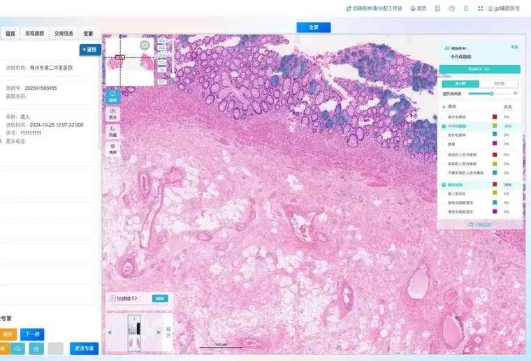
展开产品详情 ▾
适用客户与场景基层医院专家资源不足；术中冰冻、常规诊断、国内国际会诊与疑难病例的远程协同。
核心能力- 申请 / 分配 / 诊断工作站，术中冰冻与常规诊断全流程
- 近 20 款扫描仪格式，覆盖 HE / IHC / FISH
- 集成 AI 辅助诊断与 HE 切片 AI 质控
- 结构化报告和质控，结论可同步 HIS
- PC / 平板 / 手机多端
关键指标（口径随版本更新）- 投入使用超 13 年；远程累积诊断约 500 万例；国内外知名病理专家 233 位、用户 2,000 位；解决 90% 疑难病例，会诊周期从 7 天缩短至 24 小时（2025-07 产品资料口径）
交付与接入B/S 架构云端接入；与全流程系统一键转诊、报告回传。
什么时候推荐它基层医院没有专家——切片传上来，24 小时内拿到会诊意见。
宫颈细胞学 AI V3.2（TCT）
已上线
宫颈细胞学集团使用最广的病理 AI，阳性先抓、阴性复核
已上线 · 单日 3,000 例
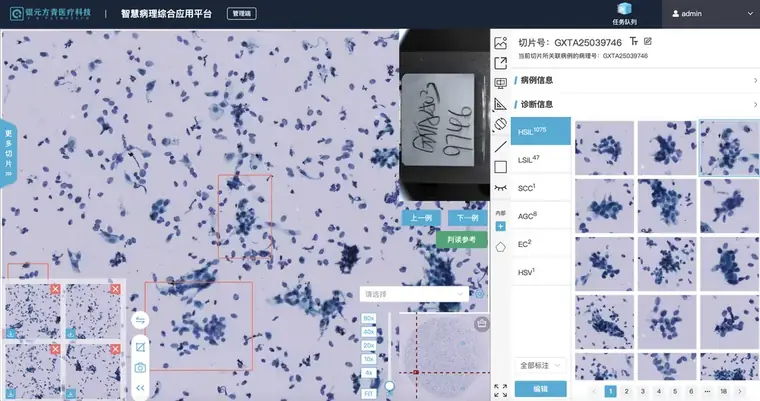
展开产品详情 ▾
适用的标本类型宫颈液基细胞学标本；制片和染色质量需满足细胞病理阅片要求。
核心能力- NILM、ASCUS、LSIL、HSIL、AGC、微生物感染、EC 识别（TBS 标准）
- 自动采集可疑病变视野 + 智能浏览轨迹
- 前置图像 AI 质控：清晰度、气泡、覆盖、细胞量
- 标准化的报告模板与判读参考
关键指标（口径随版本更新）- 南京实验室「两癌」筛查项目：全国最大通量平台，单台单日扫描分析可达 3,000 例，报告当日签发（2026-03 产品资料）
- 4090 单张 119 秒、L20 136 秒、A10 199 秒
- 生强 / 麦克奥迪 / 江丰 / 3D / 诺普析 / 优纳扫描仪适配；机构适配约 1 周
交付与接入本地或云端；已适配华为昇腾（svs、ndpi 格式）。
边界与提示- 需巴氏染色（不支持 HE 染色）；暂不支持 ASCH
- 制片与扫描质量直接影响性能
- AI 定位为质控 + 初筛员，不具备独立签发报告资格
标本要求宫颈液基细胞学制片；不支持 HE 染色，最终结果由病理医生复核并签发。
结构化病理报告系统
已上线
病理报告36 种结构化报告模板，国考 8 个癌种全覆盖
已上线 · 报告 44 万+ 份
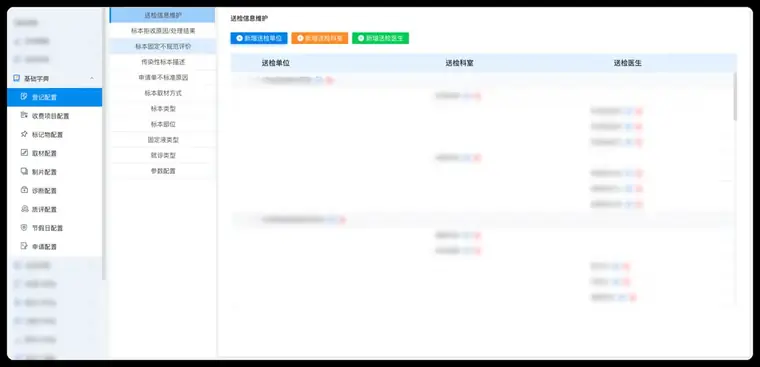
展开产品详情 ▾
适用客户与场景病理报告规范化、国考数据填报（术后病理 TNM 分期率）；合作医院与集团实验室统一报告标准。
核心能力- 36 种疾病报告模板，覆盖 WHO 等行业规范
- 国考 8 个癌种全覆盖
- 模板可按医院需求定制
- 经远程 / 全流程系统直接调用
关键指标（口径随版本更新）- 结构化报告数超44万份（截至2026-10-08）；集团 19 个病理实验室全部上线；合作医院 700+ 家上线结构化模块；35+ 家三甲医院使用（截至 2026-07-16）
交付与接入单独部署，并与本院病理信息系统对接；接口范围以医院现有系统和实施确认单为准。
什么时候推荐它报告规范化与国考填报一次配置、长期受益。
全流程病理信息管理系统
已上线
病理科管理标本到报告全流程数字化，AI 能力直接内嵌
已上线 · 全流程 V1.1
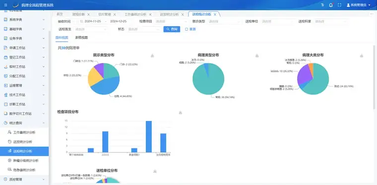
展开产品详情 ▾
适用对象新建、扩建或数智化改造的病理科，以及需要单体部署或区域协同管理的医院。
核心能力- 标本离体→取材→制片→诊断→报告→归档全过程记录（人、时间、设备、耗材可定位）
- 单体独立部署与区域多院区两种模式，共库数据隔离
- 一键转诊远程会诊，报告自动回传
- AI 辅助诊断与 AI 质控直接融合，免系统切换
- 统一数字切片阅片，兼容 20+ 款主流扫描仪格式；移动阅片、手机借片
关键指标（口径随版本更新）- 兼容 20+ 款扫描仪，与远程智慧病理平台保持同一兼容口径
- 对接 HIS、LIS、PACS；支持外送与对账
交付与接入本地部署（单体）或区域中心部署；与组化设备一键打印标签对接。
什么时候推荐它医院要先统一病理业务流程，并为后续接入 AI 模块预留条件时。
iPath 智慧病理一体机
已上线
整体交付与华为联袂：系统 + AI + 硬件 + 服务一体交付
已上线 · 部署 165 家
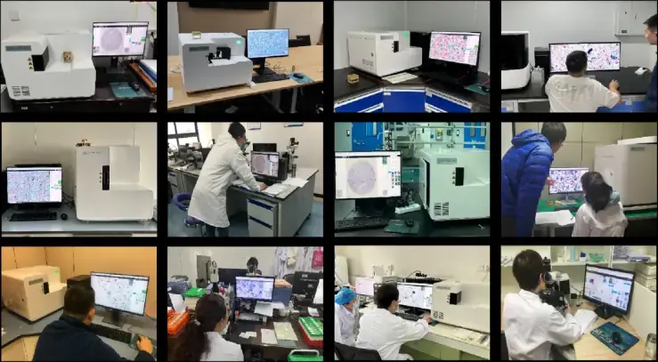
展开产品详情 ▾
适用对象需要把算力、存储、数字病理系统、AI 模块和实施服务整体部署到院内的医院。
核心能力- iPath V1.0：套餐二配置 12 个、套餐三配置 18 个数字病理模块
- 组织学 AI 按合同口径为 2026 年内上线不少于 15 个；结构化报告为独立产品线
- 内置算力 / 通算 / 存储本地部署，或本地扫描 + 云端接入
- 约 300-600 片 / 天 AI 辅助诊断量档位
- 数字切片管理、AI 诊断、结构化报告协同应用
关键指标（口径随版本更新）- 本地部署应用 165 家（2026-08 产品资料）；与华为联合提供硬件与服务
交付与接入一体机本地部署或云端接入，按院区规模适配档位。
什么时候推荐它医院需要本地算力、存储和数字病理平台一体部署，并按合同清单逐步启用组织学 AI 时。
HE 切片 AI 质控 2.0
已上线
全器官对标国家质控指标，差片前置拦截 + 全量自动评分
已上线 · 质控 2.0
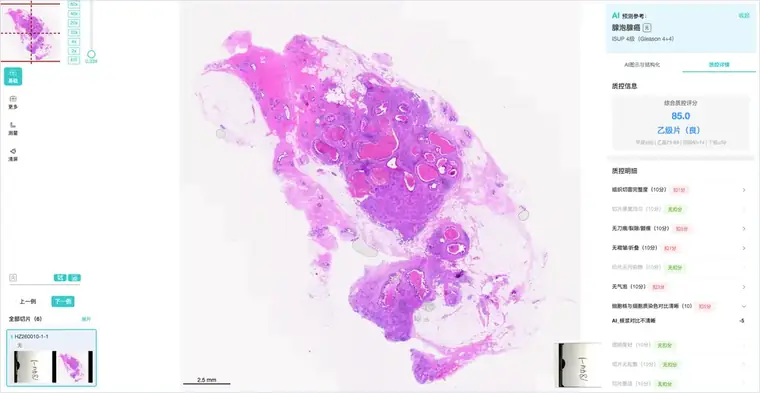
展开产品详情 ▾
适用的标本类型常规石蜡 HE 切片和冰冻 HE 切片；免疫组化及特殊染色切片暂不在当前适用范围内。
核心能力- 双模型：不合格片筛查（合格 / 不合格）+ 切片量化评分
- 切片不全、折叠、刀痕、裂痕、染色问题、封片气泡等缺陷识别
- 评分标准可按医院需求配置权重
- 日间差片筛查 + 夜间量化评分的算力调度
关键指标（口径随版本更新）- 差片预警准确率 >80%（AI 报 10 个不合格片实际约 8 个），性能持续优化
- 10,000+ 专家标注训练集、100,000+ 线上真实切片累计
- 单张筛查 10-30 秒；常规石蜡 HE 与冰冻 HE 支持
交付与接入阅片平台（本地 / 云）部署；结果可对接医院 LIS 或部署独立质控系统。
边界与提示- 免疫组化与特殊染色质控在下半年规划
- 筛查准确率持续优化中
标本要求数字切片需完整、清晰，扫描倍率和图像格式应满足系统接入要求。
结直肠活检 AI 辅助诊断
已上线
结直肠腺癌与息肉腺瘤同步识别，已在远程诊断实战两年
已上线 · 使用 2 万+ 例
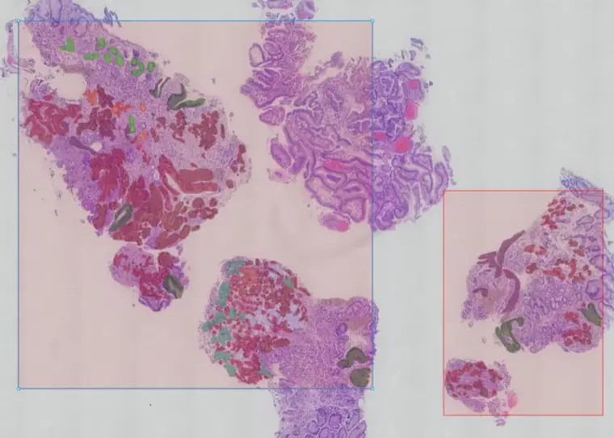
展开产品详情 ▾
适用的标本类型结直肠内镜活检组织的常规石蜡 HE 切片；手术大标本和特殊染色不纳入当前适用范围。
核心能力- 依照 WHO 标准识别泛消化道 27 大分类
- 低级别 / 高级别上皮内瘤变鉴别
- 病灶定位、分割与特征面积占比计算
- 切片向量检索相似病例
产品资料口径- 消化道活检 AI：敏感性 99.7%、特异性 96%
- 临床应用机构 2000+ 家
- 单例推理约 40—60 秒，实际速度受切片大小和服务器配置影响
交付与接入独立 AI 平台或与病理系统结合部署；支持市面主流扫描格式。
边界与提示- 炎性病变智能分析、手术标本 TNM 分期、MSI 预测在后续路线中
- AI 结果需病理医生复核后使用
标本要求结直肠内镜活检组织、常规石蜡制片、HE 染色；AI 结果由病理医生复核。
胃活检 AI 辅助诊断
已上线
胃胃黏膜活检 HE 切片自动定位癌与高级别区域，输出分型建议
已上线 · 2025 版
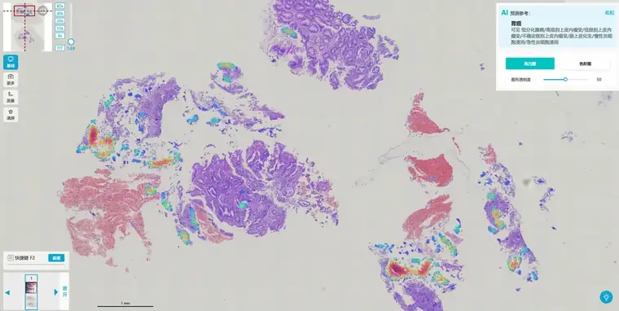
内部验证·癌症识别99.3%
内部验证·三分类91.1%
展开产品详情 ▾
适用的标本类型胃黏膜内镜活检小标本的常规石蜡 HE 切片；不适用于 ESD 和手术大标本。
核心能力- 片级诊断 + 热力图 / 色阶图双重病灶提示
- 非肿瘤病变提示（慢性炎、急性炎、肠上皮化生）
- 腺癌高 / 中 / 低分化分型，癌前病变（低级别、高级别瘤变）识别
- 兼容 svs、mrxs、mdsx、TMAP、kfb、tron 等主流扫描格式
- 结构化诊断报告，助力教学与科研
内部验证数据- 癌症识别准确率 99.3%、胃癌敏感性 99.36%（338 张内部验证集，其中胃癌 156 张；2025 版产品资料）
- 以上为内部验证集结果，不作为单院临床效果承诺
- 单例推理约 40—60 秒
交付与接入本地部署或云端接入；可对接医院 PIS、HIS、EMR 与集团远程病理平台。
边界与提示- 仅适用胃黏膜小标本活检 HE 切片，ESD / 手术大标本不适用
- 息肉、腺瘤、淋巴瘤等暂归「其他病变」，后续研发
- 低级别 / 高级别判读普遍偏高一个档位，需医生复核
- AI 结果不替代医生诊断与报告签发
标本要求胃黏膜内镜活检小标本、常规石蜡制片、HE 染色；AI 结果由病理医生复核。
食管活检 AI 辅助诊断
已上线
食管针对中国高发食管鳞癌特调，鳞状上皮病变识别强化
已上线 · 使用 7,685 例
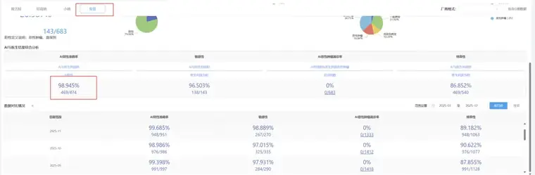
展开产品详情 ▾
适用的标本类型食管内镜活检组织的常规石蜡 HE 切片；不包含手术大标本和特殊染色切片。
核心能力- 鳞癌与鳞状上皮内瘤变（低 / 高级别）识别强化
- Barrett 食管等 12 类片级分类
- 病灶分割与特征占比计算
- 与胃、结直肠共用消化道平台，统一操作习惯
证据口径- 内部验证集：恶性肿瘤敏感性 100%、高级别及以上敏感性 97.45%、特异性 92.5%（0818 版验证集）
- 集团内应用记录：7,685 例，片级敏感性 96.1%、特异性 86.8%
- 内部验证数据与实际应用记录分开统计，不直接横向比较
交付与接入随消化道 AI 平台部署，对接远程病理与病理系统。
边界与提示- 单标签输出最严重病变
- 罕见病种存在误诊风险，需医生复核
标本要求食管内镜活检组织、常规石蜡制片、HE 染色；AI 结果由病理医生复核。
前列腺穿刺 AI 辅助诊断 V3.0
已上线
前列腺穿刺 / 电切标本良恶性判读，多切片自动整合病例报告
已上线 · V3.0
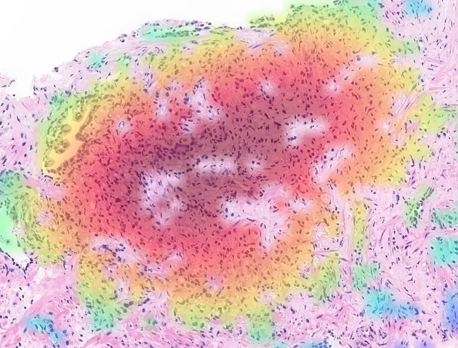
展开产品详情 ▾
适用的标本类型前列腺穿刺活检和经尿道电切组织的常规石蜡 HE 切片；根治术标本暂不适用。
核心能力- 非肿瘤性病变 / 可疑恶性 / 腺泡腺癌判读（参考 WHO 第五版）
- 伴随病变识别：筛状结构、导管内癌、神经侵犯
- 热力图置信度分层，色阶越红置信度越高
- 与医院病理系统对接，一键同步 AI 诊断
关键指标（口径随版本更新）- 敏感性 98%、特异性 90%；单张切片 <3 分钟
- 支持 3090 / 4090 / L20 及华为 Atlas 300V
- 穿刺按切片、电切按部位自动整合病例级报告
交付与接入本地部署，主流扫描仪（麦克奥迪 / 优纳 / 生强等）20 倍物镜。
边界与提示- 根治术标本暂不适配；仅支持 HE 染色
- Gleason 评分功能持续优化中
- 存在假阳性病例，需医生复核
标本要求前列腺穿刺或电切组织、常规石蜡制片、HE 染色；20 倍物镜数字切片。
肺组织 AI 辅助诊断 V3.2
已上线
肺穿刺 / 手术标本腺癌鳞癌分型，衔接多模态综合报告
已上线 · V2
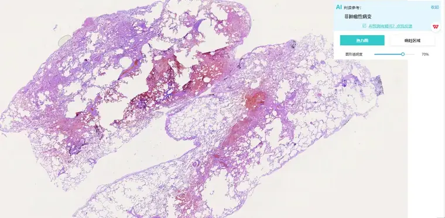
内部测试·总体98.9%
内部测试·手术标本99.4%
展开产品详情 ▾
适用的标本类型肺组织穿刺小标本和手术标本的常规石蜡 HE 切片；细胞蜡块可用于内部验证，刷片和细胞涂片暂不适用。
核心能力- 腺癌（高 / 中 / 低分化）、鳞癌（角化 / 非角化 / 基底样）分型
- 浸润性癌待分型、其他肿瘤、非肿瘤性病变判读
- 结合临床、免疫组化、影像、NGS 信息生成综合性报告
- 支持穿刺与手术标本
内部测试数据- 2026 年 1 月内部测试 5,918 例：总体准确率 98.93%，手术大标本 99.42%、小组织 98.70%、细胞蜡块 95.70%
- 内部测试结果不作为单院临床效果承诺
产品应用记录- 穿刺标本推理 <5 分钟、手术标本平均 10 分钟（4090 配置）
- 已生成 400+ 份多模态综合报告
交付与接入随智慧病理平台部署，支持本地服务器（4090）推理。
边界与提示- 细胞蜡块标本准确率较低，刷片 / 细胞涂片暂不适配
- 热力图部分区域可能偏移，新版本矫正中
- 需医生复核
标本要求肺组织穿刺小标本或手术标本、常规石蜡制片、HE 染色；细胞学标本暂不在交付范围。
卵巢组织 AI 辅助诊断 V2.3
已上线
卵巢国内少见的卵巢专病模型，4 大类 21 小类全覆盖
已上线 · V2.2
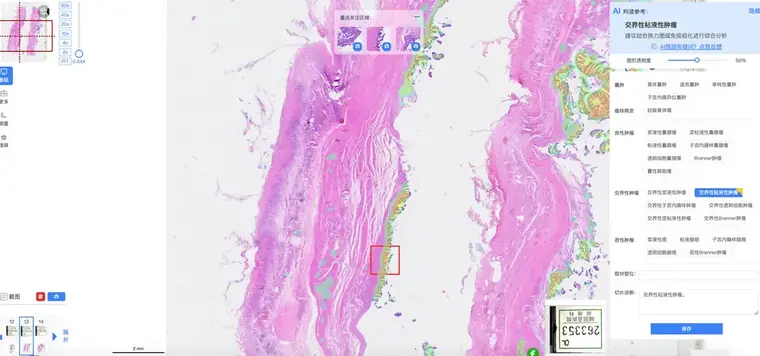
内部验证·敏感性96.8%
内部验证·特异性92.4%
展开产品详情 ▾
适用的标本类型卵巢组织手术标本的常规石蜡 HE 切片；术中冰冻切片和同片混有输卵管组织的标本暂不适用。
核心能力- 非肿瘤 / 良性 / 交界性 / 恶性四分类（WHO 卵巢肿瘤分类）
- 以上皮性肿瘤为重点（占恶性+交界性 83.7%）
- 交界性肿瘤 6 类识别
- 热力图 + 重点区域导航；多中心数据训练与验证
内部验证数据- 348 张回顾性内部测试（2026 年 1—5 月）：四分类准确率 76.4%、敏感性 96.8%、特异性 92.4%
- 测试中恶性样本仅 6 例，样本量较小，不能作为对外临床效果承诺
- 模型仍按月度版本迭代
交付与接入随智慧病理平台部署，向全国共建实验室开放测试。
边界与提示- 仅适用卵巢组织，同片含输卵管组织表现不佳
- 冰冻切片暂不适用
- 定位为智能分诊助手，不用于疑难病变鉴别诊断
- AI 结果须病理医生复核
标本要求卵巢组织手术标本、常规石蜡制片、HE 染色；当前不支持术中冰冻切片。
内部验证 / 内测 · 可安排试用4 项
宫颈活检病理 AI 辅助诊断 V2.3
内部验证
宫颈9 类主要病变鉴别，恶性敏感性 99%
内部验证 · V2.2
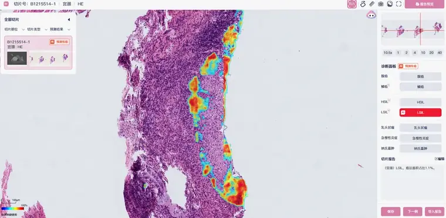
展开产品详情 ▾
适用的标本类型宫颈活检小标本的常规石蜡 HE 切片；不适用于锥切、LEEP 和根治术标本。
核心能力- 恶性肿瘤：鳞癌、腺癌、其他恶性
- 癌前病变：LSIL/CIN1、HSIL/CIN2-3、原位腺癌
- 良性肿瘤细分（平滑肌瘤等）
- 热力图 + 结构化报告自动填充
内部验证数据- 恶性肿瘤敏感性 99%、HSIL 及以上敏感性 95%、特异性 85%（广州实验室及多家共建医院内部验证）
- 当前为内部验证结果，不作为临床效果承诺
交付与接入随智慧病理平台部署，宫颈活检小标本 HE 切片。
边界与提示- 不适用锥切、LEEP、根治术标本
- 单标签输出最严重病变；罕见病种存在误诊风险
- 需医生复核
标本要求宫颈活检小标本、常规石蜡制片、HE 染色；当前为内部验证产品。
子宫内膜活检 AI 辅助诊断 V2.3
内部验证
子宫内膜10 类病变判读，FIGO 分级对齐报告习惯
内部验证 · V2.2
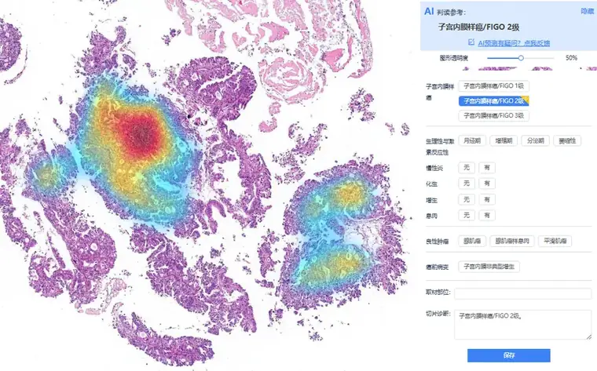
展开产品详情 ▾
适用的标本类型子宫内膜活检小标本的常规石蜡 HE 切片；局部切除和根治术标本暂不适配。
核心能力- 恶性肿瘤 5 类：子宫内膜样癌 FIGO 1/2/3 级、上皮性其他恶性、间叶源性恶性
- 癌前病变（子宫内膜非典型增生）识别
- 良性细分：腺肌瘤、腺肌瘤样息肉、平滑肌瘤
- 热力图 + AI 自动填充结构化报告面板
内部验证数据- 恶性肿瘤敏感性 99%、癌前病变及以上敏感性 95%、特异性 90%（集团实验室及共建医院内部验证）
- 当前为内部验证结果，不作为临床效果承诺
交付与接入随智慧病理平台部署，活检小标本 HE 切片。
边界与提示- 暂不适配局部切除、根治术标本
- 单标签输出最严重病变
- 需医生复核
标本要求子宫内膜活检小标本、常规石蜡制片、HE 染色；当前为内部验证产品。
膀胱组织活检 AI 辅助诊断 V2.3
内测
膀胱国内首款多分类膀胱专病模型，6 大类 26 小类
内测 · 2.0
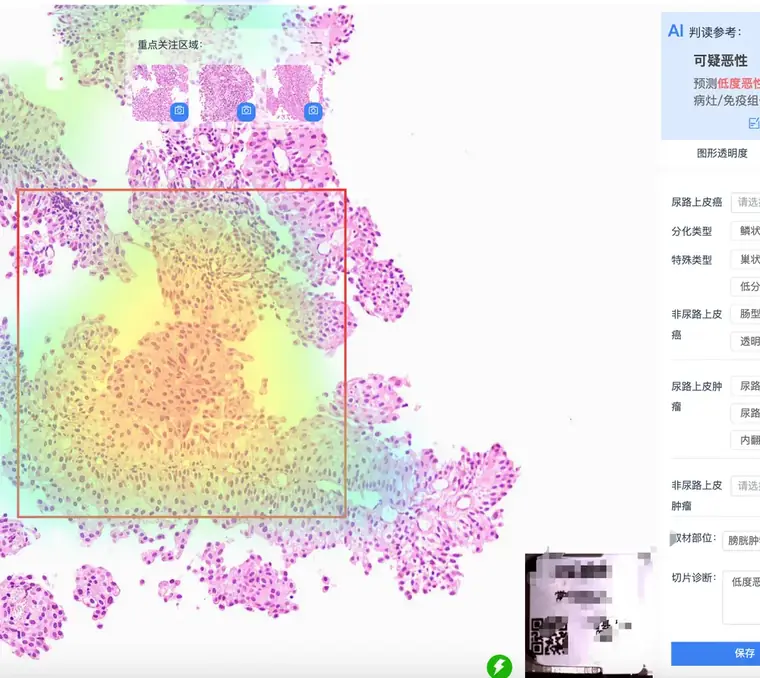
内部验证·敏感性97.9%
内部验证·特异性88.1%
展开产品详情 ▾
适用的标本类型膀胱活检和经尿道电切组织的常规石蜡 HE 切片；20 倍或 40 倍数字切片。
核心能力- 浸润性 / 非浸润性尿路上皮癌、非尿路上皮癌、可疑恶性、良性肿瘤、非肿瘤病变六类（WHO 标准）
- 浸润性尿路上皮癌 6 亚型、非尿路上皮癌 6 类
- 热力图 + 重点关注区域导航
- 根据新增病例和复核结果更新模型
内部验证数据- 回顾性测试：敏感性 97.9%（漏诊率 2.1%）、特异性 88.1%
- 推理平均 1.17 分钟 / 张（4090，最快 13 秒）
- 当前为内测结果，不作为临床效果承诺
交付与接入随智慧病理平台部署，活检标本 HE 切片，20X/40X。
边界与提示- 尿路上皮原位癌（CIS）与 PUNLMP 类别样本少、稳定性受限——CIS 疑似病例须医生主导阅片
- 定位为智能分诊助手，不替代医生最终诊断
标本要求膀胱活检或电切组织、常规石蜡制片、HE 染色；当前为内测产品。
乳腺穿刺病理组织 AI
内部验证
乳腺13 类病变精细化鉴别，一主二次多标签输出
内部验证 · 独立验证 500 张
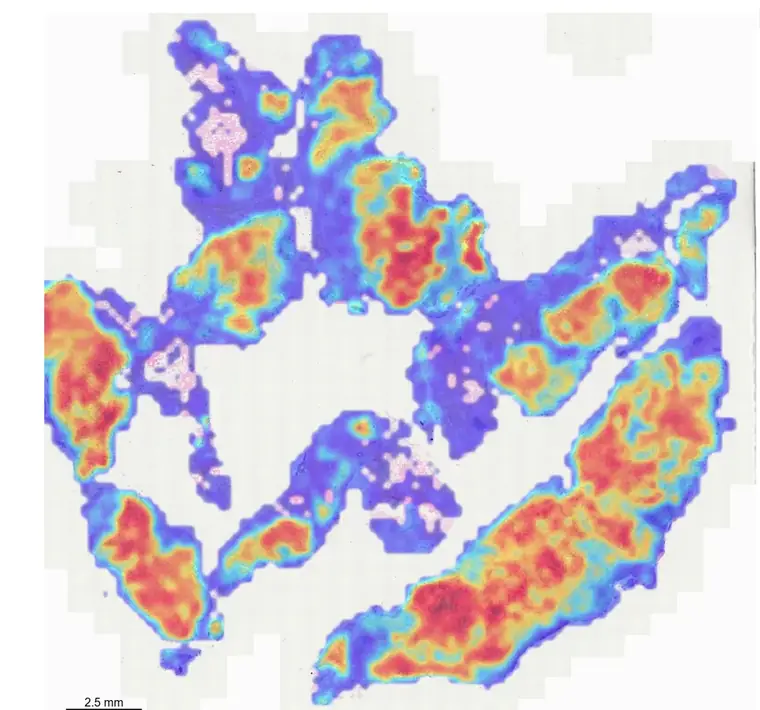
内部验证·浸润癌敏感性99%
内部验证·特异性97%
展开产品详情 ▾
适用的标本类型乳腺粗针穿刺活检组织的常规石蜡 HE 切片；手术大标本尚未完成充分泛化验证。
核心能力- 5 大类 13 小类病变鉴别（WHO 乳腺肿瘤分类）
- 每张切片 1 个主要诊断 + 2 个以内次要诊断
- 病灶位置与边界可视化提示
- 对齐医生报告颗粒度（区分 UDH 与 ADH 等亚类）
内部验证数据- 从乳腺穿刺数据中抽取 500 张独立验证集，浸润性导管癌敏感性 0.99、特异性 0.97
- 当前为内部验证结果，不作为临床效果承诺
交付与接入本地部署；显卡最低 20G、内存 32G。
边界与提示- 仅限粗针穿刺 HE 切片，大标本未完全泛化
- ADH / L-DCIS、DCIS 分级、硬化性腺病等细分可能混淆，需复核
- 存在漏诊与过度诊断可能，AI 结果供参考
标本要求乳腺粗针穿刺活检组织、常规石蜡制片、HE 染色；当前为内部验证产品。
基础模型与规划中产品1 项
PanoPath 病理基础大模型
基础模型
基础模型自研病理基础模型，已完成四项国际评测
基础模型 · 四项国际评测
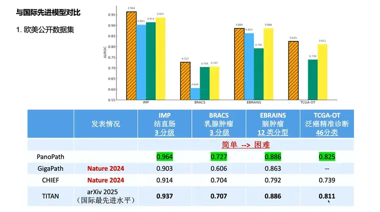
结直肠 3 分级0.964
泛癌 46 分类0.825
展开产品详情 ▾
研发适用范围用于组织学和细胞学数字切片的基础表征学习与专病模型研发，不作为可单独采购的临床诊断产品。
核心能力- 单阶段端到端全景建模，突破传统 MIL 范式
- 支持预后、检索、基因突变预测、肿瘤原发预测、空间转录组学等任务
- 多 Agent 协作的多语言病理数据预训练管线
- 已在胃、肠、食管、前列腺等专病模型中落地
关键指标（口径随版本更新）- 88 万切片版本口径：IMP 结直肠 3 分级 0.964、BRACS 乳腺 0.727、EBRAINS 脑肿瘤 12 类 0.886、TCGA-OT 泛癌 46 分类 0.825，同口径超过 GigaPath（Nature 2024）、CHIEF、TITAN
什么时候讲这部分客户询问模型训练数据、基础模型和评测结果时，可以打开本页说明。